Activity: Adding deformation features across bends
Click here to download the activity file.
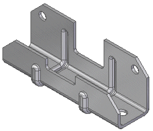
Objectives
This activity demonstrates how to add deformation features across a bend within a sheet metal file. In this activity you will:
-
Unbend a sheet metal part
-
Create a bead across bends within the sheet metal file.
-
Rebend the sheet metal part.
Start Solid Edge 2023.
Open deformation_across_bend_activity.psm.
Select the Home→Sheet Metal→Bend→Unbend command
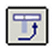
.Place the cursor over the highlighted face and click.
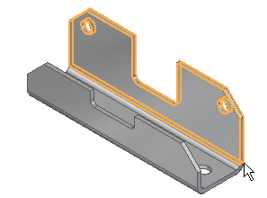
On the Unbend command bar, set the Select option to All Bends.
On the Unbend command bar, click Finish.
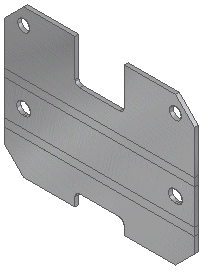
On the Unbend command bar, click Cancel.
In PathFinder, click the entries for Sketch 1 and Sketch 2.
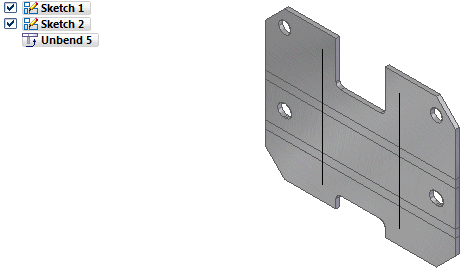
Select the Home→Sheet Metal→Dimple→Bead command .
On the Bead command bar, set the Create From option to Select From Sketch.
Place the cursor over the highlighted sketch and click.
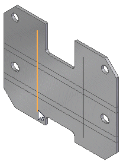
On the Bead command bar click the Accept button.
Position the cursor so the arrow appears as shown in the illustration.
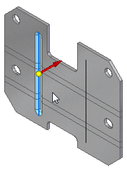
Click to accept the display side for the bead and then click Finish to create the bead.
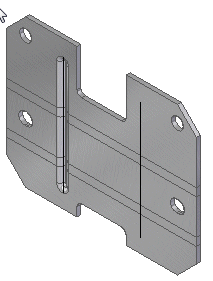
Repeat the previous step to use Sketch 2 to create another bead.
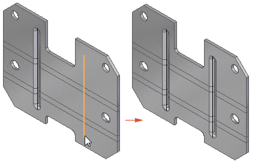
Select the Home→Sheet Metal→Bend→Rebend command
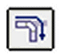
.On the Rebend command bar, set the Select option to All Bends.
On the Rebend command bar, click Finish.
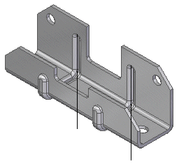
In PathFinder, deselect the entries for Sketch 1 and Sketch 2.
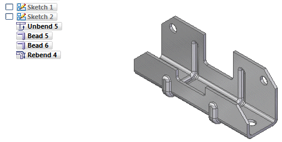
Save and close the sheet metal document. This concludes this activity.
In this lesson you created a variety of deformation features. The feature origin for a rigid procedural feature was displayed and moved to a new location. The feature was rotated. Multiple occurrences where created with the pattern command.
Answer the following questions:
-
What is the definition of a deformation feature?
-
What is the difference between a drawn cutout and a dimple?